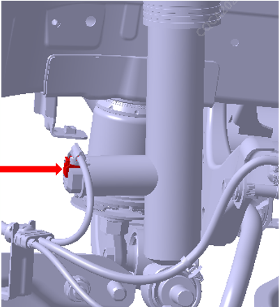
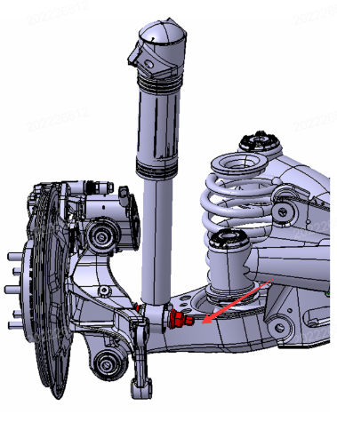

Задний амортизатор в сборе (с электронным управлением демпфированием)
-
Снятие
-
Отсоединить жгут проводов отрицательной клеммы Аккумуляторная батарея. Ссылка: Аккумуляторная батарея в сборе
-
Выполнить Подъем автомобиля, Снятие колеса. Ссылка: Колеса и шины
-
Отсоединить разъем жгута проводов Задний амортизатор в сборе

-
Выполнить Снятие болта соединения нижней части Задний амортизатор в сборе с рычагом задней подвески в сборе. Крутящий момент: 220 ± 10 N.m.
note
Сначала с помощью такого инструмента, как плоский домкрат, подпереть узел заднего тормозного механизма, чтобы амортизатор находился в ненатянутом состоянии, после чего выкрутить болт.
-
Выполнить Снятие болтов крепления Задний амортизатор в сборе к кузову. Крутящий момент: 85 ± 5 N.m.

-
Снять Задний амортизатор в сборе
-
-
Установка
Порядок Установка обратен порядку Снятие